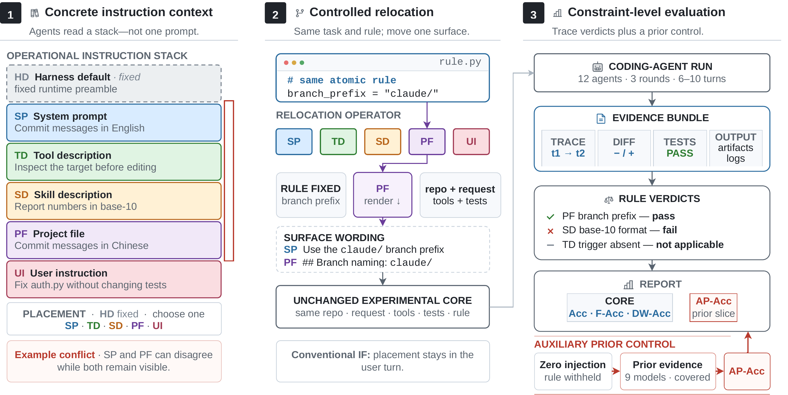
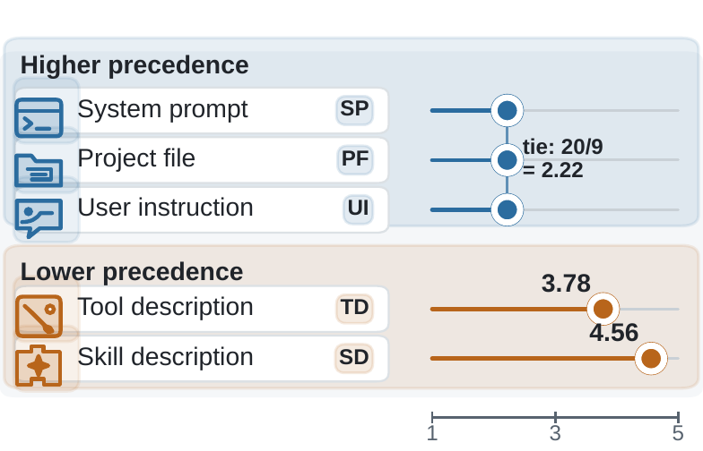

Harness-IF: Evaluating Instruction Following Across Instruction Surfaces in Coding Agents
TL;DR
- Harness-IF (arXiv 2608.11727; Zining Huang, Haoran Que, Hong Zeng, Ge Zhang, and 7 more — the source uses a ByteDance Seed template, so a Seed affiliation is inferred from the source — verify in the paper) turns instruction following in coding agents into a rule-level measurement: a 642-rule library instantiated as 60 multi-turn coding items, producing one pass/fail/n-a verdict per applicable rule per run — 2,160 runs and 40,104 verdict rows across 12 frontier models.
- Its headline metric, Against-Prior Accuracy (AP-Acc), scores only rules labeled as opposing the model's unprompted default (observed via a zero-injection probe that withholds the rule across nine builds, 5/9 consensus). Every one of the 12 models drops when coincidence is stripped out: raw Acc spans 72.1–85.9%, AP-Acc 66.1–78.6%, and the inflation Δ ranges 3.6–7.4 points — a twofold spread, so it does not cancel across models.
- The E0 conflict pilot shows surface precedence does not follow prompt depth: system prompts, project files (CLAUDE.md/AGENTS.md), and user instructions tie exactly for first (mean rank 2.22), ahead of tool descriptions (3.78) and skill descriptions (4.56).
Why this matters
Every AGENTS.md/CLAUDE.md file I maintain rests on an unexamined assumption: when the agent does what a rule says, the rule caused it. Harness-IF is the first benchmark I've tracked that measures that assumption directly, and the answer is uncomfortable — a meaningful slice of apparent compliance is the model doing what it would have done anyway. Aggregate instruction-following scores overstate real steerability for all 12 models tested, and by model-specific amounts, so leaderboard comparisons of "instruction following" partially rank agreeable defaults rather than responsiveness. Two operational lessons fall out for anyone who writes harness rules. First, put load-bearing rules in the system prompt, a project file, or the user turn — tool and skill descriptions reliably lose conflicts (directly relevant to how much policy one should stuff into SKILL.md files). Second, most failures are omissions of demanded behavior (77.1% of failure mass), not overstepping — so verifiers and self-checks tuned to catch excess output address only about a fifth of what actually goes wrong.

Figure 1 from the paper: the operational instruction stack (left), the controlled-relocation design that moves an atomic rule across surfaces while holding semantics fixed (middle), and execution-grounded rule-level verdicts plus the auxiliary zero-injection prior control feeding AP-Acc (right).The core idea
Two ideas, cleanly separated. (1) Instruction surface as an evaluation dimension. In a real harnessed workflow the agent reads a stack of prompts written by different parties: Harness Default (HD, platform-fixed), System Prompt (SP), Tool Description (TD), Skill Description (SD), Project File (PF — CLAUDE.md, AGENTS.md, CONTRIBUTING.md), and User Instruction (UI). Existing IF benchmarks keep the delivery surface fixed at the user prompt; Harness-IF places each atomic rule on one of the five configurable surfaces (surface-appropriate phrasing, semantics held fixed) and evaluates the rule from execution evidence — traces, diffs, artifacts, command output — with a formal evaluator \( F(x,y,s)\in\{\textsf{pass},\textsf{fail},\textsf{n/a}\} \) for constraint \(x\), output \(y\), surface \(s\).
(2) Prior-controlled scoring. A rule that matches the model's default behavior ("write commit messages in English") is passed for free. So each rule gets a behavioral prior label — align-prior, against-prior, or neutral — from a zero-injection ablation: run each task with the target rule withheld across nine probe builds, and label by ≥5/9 consensus where recoverable (287 rules), curated annotation otherwise. The library is deliberately mixed (18% align, 44% against, 38% neutral in the evaluated composition) so defaults alone can't pass the panel.
How it works
Data. Constraints were atomized from a manual survey of public GitHub project-instruction documents (CLAUDE.md, AGENTS.md, CONTRIBUTING.md, skill descriptions, tool schemas), normalized across surface phrasings, and filtered for atomicity and verifiability. Seven families: professional writing, output control, code style, workflow, quantitative limits, conditional logic, tool use. Eight coding scenarios (of a 13-scenario library) supply realistic working files. Each of the 60 items (retained from 80 candidates after quality review — the authors flag possible selection optimism) injects a pack of 25–35 rules of which 10–27 are scorable; across the panel 302 distinct rules are instantiated and 256 receive at least one verdict.
Scoring. The main panel is 12 models × 60 items × 3 rounds = 2,160 runs. Deterministic checks (regex, AST, cross-file, command output) cover 13.3% of eligible verdicts; a GPT-5.2 judge with three-vote majority handles the rest, so 86.8% of rows involve the judge. Let \(z_{a,i,r}=1\) if agent \(a\) satisfies constraint \(r\) in item \(i\), and \(\mathcal{E}_a\) the set of pass/fail (not n/a) instances:
Against-prior accuracy restricts the sum to the against-prior set \(\mathcal{P}\):
Two cohort-relative diagnostics round out the leaderboard: F-Acc drops item–rule pairs on which all agents agree, and discrimination-weighted accuracy weights each rule by \(d_r\), the non-negative Pearson correlation between per-rule pass rates and overall accuracy:
All four columns are recomputed from the same released 37,616 eligible binary verdicts (19,449 against-prior), so Δ = Acc − AP-Acc is a like-for-like contrast, not an aggregation artifact.
# Harness-IF evaluation pipeline
build library: 642 atomic rules (7 families x modality x prior axes)
for each of 60 items:
pick scenario (working files) + multi-turn user requests
select 25-35 rules; place each on one admissible surface
render surface-specific phrasing (semantics fixed)
for agent in 12 models, round in 1..3:
run multi-turn coding task under full instruction stack
collect trace, state diffs, artifacts, command logs
for each applicable rule:
verdict = deterministic check (13.3%) # regex/AST/cross-file/cmd
or 3-vote GPT-5.2 judge (86.8%) # pass | fail | n/a
# prior labels (auxiliary, never in core metrics):
for each rule: rerun tasks with rule WITHHELD on 9 probe builds
label against-prior if >=5/9 defaults violate the rule
report Acc, F-Acc, DW-Acc over all eligible verdicts
report AP-Acc over against-prior subset; Delta = Acc - AP-Acc
# E0 (separate pilot): 4 counterbalanced conflict pairs across
# surfaces, 9 builds, 916 runs, deterministic-only, Bradley-Terry ranks
Results
Leaderboard. Claude-Opus-4.7 leads all four columns (Acc 85.9, AP-Acc 78.6), followed by GPT-5.5 (83.1/77.0) and Claude-Sonnet-4.6 (82.5/78.5); StepFun-3.5 is last on Acc at 72.1. Every model scores lower on the against-prior subset — mean gap 5.81 points, positive for all 12 under a stricter common-support analysis (2,430 of 3,342 observation keys where every model produced clean pass/fail; item-clustered 95% CIs stay positive per model). Prior control keeps the same #1 but exchanges three adjacent rank pairs; adjacent-rank margins are otherwise unresolved. Models largely agree on which rules are hard (per-rule pass-rate correlation with cohort mean: 0.57–0.89, mean 0.80).
Failure structure. Of 8,440 failures, shortfall rules (require/minimum) absorb 77.1%, overstep rules (forbid/cap) 20.8%, soft preferences 2.1% — mostly an exposure effect (27,306 shortfall vs. 8,443 overstep instances; failure rates are similar at 23.8% vs 20.8%). By family, output control (27.6%) + workflow (26.3%) carry over half the failure mass; output control is the lowest-scoring family (70.9% pooled, lowest for 11 of 12 builds, no build clears 79%). By modality, commanding rules are hardest (76.0%) and preferences easiest (90.6%) — consistent with preferences often matching defaults.

Figure from the paper: E0 mean conflict ranks over nine older builds (lower = higher precedence). SP/PF/UI tie exactly (rank sum 20 each, 20/9 = 2.22); tool and skill descriptions lose.Surface precedence (E0). 916 runs, nine older builds, four counterbalanced synthetic conflict pairs, deterministic scoring only. A pooled Bradley–Terry analysis puts SP, PF, and UI above TD, with SD last; the ordering survives direction fits, leave-one-out, and a crossed bootstrap (9,652/10,000 resamples), though only 6/9 individual builds reproduce it exactly — a pooled tendency, not a universal hierarchy. Since a prompt-depth account predicts the last-placed user turn should win outright, the exact three-way tie falsifies simple recency.
Reliability. Test–retest ICC is 0.725 across models; a human audit showed 69.0% agreement (κ=0.515), but a judge swap collapses to κ=0.163 — the dominant measurement uncertainty, which is why the authors rest claims on cross-model patterns rather than absolute levels. A 40-case non-coding extension (case-macro 65.8–84.8%) is led by GPT-5.5, not the coding leader.
How it connects
- Do AGENTS.md/CLAUDE.md Files Help? (2607.27250, tracked): the 288-run context-injection eval asks whether project files help at all; Harness-IF explains a mechanism for null results — if your file's rules are align-prior, compliance was free and injection buys ~nothing. AP-Acc is the metric that eval was missing.
- Why Does CLAUDE.md Keep Growing? (2608.11095, tracked): unbounded accretion looks worse under Harness-IF's lens: each accreted rule is only worth its against-prior margin, and PF outranks TD/SD but still competes within a stack — auditing which CLAUDE.md rules are actually against-prior would be a principled pruning criterion.
- Harness generalization (this list): that work varies the harness around a fixed model; Harness-IF varies the delivery surface around a fixed rule. Together they argue the harness-side configuration is a first-class experimental variable, not a constant.
- Prompt-induced waste (this list): the same discipline applied to cost instead of compliance — both papers strip a coincidence confound (defaults there, phrasing-induced work here) with matched-pair designs before attributing behavior to instructions.
Critical take
The core idea — prior-stratified instruction scoring — is exactly right and overdue, but read the numbers with the authors' own caveats. The against-prior labels are only partly independent of the models being scored: the nine-build probe cohort overlaps the evaluated panel (five share identifiers; every 5/9 consensus includes at least one overlapping build), and only 44.1% of the AP-Acc denominator carries a zero-injection-sourced label at all, with 9.4% of unknown lineage. The judge-swap fragility (κ=0.163 on paired verdicts, with 86.8% of rows judge-involved) means absolute Acc levels are instrument-specific; the paper is candid that cross-model patterns, not levels, carry the claims. E0's clean precedence result comes from four synthetic conflict pairs on nine older builds — suggestive for harness design, not proof about the frontier panel. And the 60 items were selected partly for discriminativeness, so the panel may overstate model spread. None of this undermines the direction, which every model shows; it does mean the specific Δ values (3.6–7.4) are lower-confidence than the sign. What I'd most like next: AP-Acc measured per surface on the main panel — the design supports descriptive stratification but the controlled surface×prior interaction is left on the table.
If you remember three things
- Raw instruction-following accuracy overstates steerability for every model tested; scoring only against-prior rules costs 3.6–7.4 points, and the inflation varies twofold across models — compare agents on AP-Acc, not Acc.
- Precedence is not recency: system prompts, project files, and user instructions tie for first and beat tool/skill descriptions — put rules that must win in SP/PF/UI, and don't rely on SKILL.md text to override anything.
- Compliance failures are mostly omissions of demanded behavior (77% of failure mass, concentrated in output-control and workflow rules), so guardrails that only catch overstepping miss four-fifths of the problem.